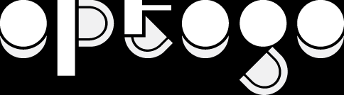

>NO TAIWAN,NO EXPO
『OPTOGO = ONE PAVILION TO GO，外帶台灣館。』
從我到我們_第一次由公民發起，自主參加世界博覽會。
來自各行各業，平均26歲的年輕人們，民間公民團體發起的計畫！

2015 Milan EXPO: Taiwan Pavilion
『OPTOGO = ONE PAVILION TO GO，外帶台灣館。』
從我到我們_第一次由公民發起，自主參加世界博覽會。
來自各行各業，平均26歲的年輕人們，民間公民團體發起的計畫！